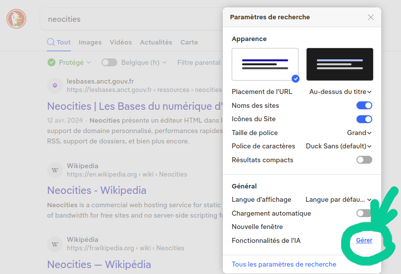
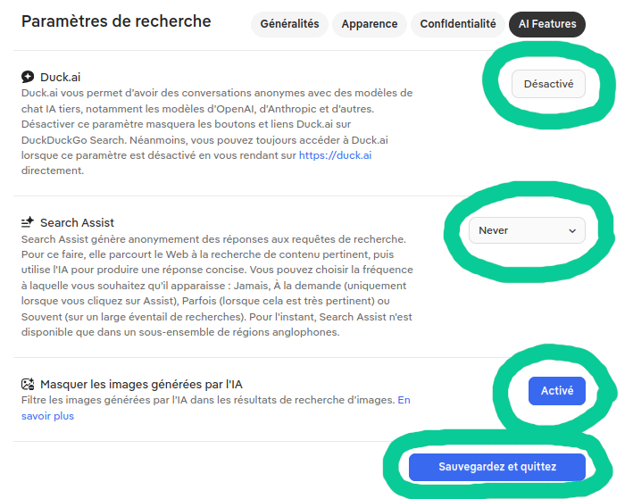

Pourquoi ne pas utiliser l'IA et comment la désactiver
Pourquoi ne pas utiliser l'IA et comment la désactiver
Déjà, c'est quoi l'IA en fait ?
L'IA est un terme marketing utilisé pour designer certains algoritmes (séries d'opérations réalisées par un ordinateur), pour jouer sur l'aspect "proche de ce dont est capable le cerveau humain" - d'une forme d'intelligence. Mais soyons clairs, c'est là une drôle de définiton de l'intelligence si on prétend que le fonctionnement du cerveau humain pourrait se réduire à une suite d'opérations mathématiques.
On parle souvent d'IA comme raccourci pour parler de l'IA générative en particulier : celle qui produit par exemple du texte, du son, des images. Ce type d'IA donne particulièrement une impression d'intelligence, en générant du contenu qui peut passer pour une l'équivalent d'une pensée ou d'une création. Il est important de comprendre que l'IA ne fonctionne pas comme un cerveau humain, et n'est pas capable de pensée propre ni de création. L'IA générative fait simplement beaucoup de calculs de probabilités, à partir de données d'entrainement d'un taille inimaginable, pour donner le résultat le plus probable à la requête d'après les données qu'elle a.
Et les données qu'elle a, c'est notamment tout ce qui est sur internet. Et comme il y a beaucoup d'informations fausses, de gens qui disent des horreurs etc. sur internet, et que tout cela est inclu dans ce sur quoi l'IA générative se base pour répondre, on comprend facilement que sa réponse n'est pas réellement fiable. Il faut donc faire très attention à de pas prendre pour vérité ce que l'IA répond pour lui poser une question. L'IA est un outil basé sur des probabilités, et si vous interragissez avec elle, elle vous donnera les réponses qu'elles pensent que vous attendez, et non pas une réponse objective sur ce que vous cherchez, tout en se basant sur des infos pas forcément fiables, et en citant parfois même de fausses sources.
Les dangers de l'IA pour soi
On n'en parle pas assez, mais parmi les dangers de l'utilisation de l'IA générative, il y a la dépendance à celle-ci. Et par là je parle de dépendance cognitive. Il a été prouvé que les personnes qui délèguent leurs processus de recherche, réflexion, formulation de phrase etc. à une IA ne mobilisent donc pas eux mêmes ces compétences, ne les entretiennent pas, ne les développent pas, perdent leur confiance en ces capacités et solicitent de plus en plus l'IA. Ca devient un cercle vicieux : ces personnes risquent de ne plus parvenir à mobiliser ces aptitudes là, à la fois parce qu'elles en perdent la pratique, mais aussi parce qu'elles ne s'en sentent pas capables, ou du moins, se sentent moins capables que l'IA.
En dehors de la dépendance, il faut savoir que le fait que l'IA générative comme ChatGPT, si vous lui demandez conseil, ira toujours dans votre sens, et utilisera des formulations et un vocabulaire simulant une humanité et une proximité avec vous. Tout cela réunit a des conséquences désastreuses : certaines personnes ont été incitées au meurtre ou au suicide, et certaines personnes se sont réellement suicidées à cause de ça.
Ne pas utiliser l'IA, c'est avoir confiance en ses capacités de réflexion, de discernement, de recherche et d'apprentissage. Le résultat de ce que nous écrivons par exemple ne sera pas parfait, mais notre façon d'écrire traduit notre pensée, et on ne peut pas en dire autant pour ce qui est écrit par l'IA. Vos écrits, votre pensée et votre art ont une valeur inestimable, et toute votre vie, vous progresserez et changerez grâce à vos expériences, vos réussites comme vos échecs. Ce processus n'est tout simplement pas possible si vous utilisez l'IA pour réaliser des choses à votre place. Prenez soin de vous et ne vous reposez jamais sur l'IA, il en va de la santé de votre cerveau et de votre personne.
Les dangers de l'IA pour les autres
Les gens utilisent en général l'IA générative pour lui poser des questions, lui demander de l'aide, dans des situations où on demanderait sinon à quelqu'un d'autre. J'ai expliqué comment utiliser l'IA pouvait être incapacitant, mais c'est également très isolant.
La présence de l'IA crée une illusion d'une assistance à disposition en permanence, comme s'il y avait toujours quelqu'un pour répondre à vos questions ou vous aiguiller, et que vous n'aviez pas besoin d'aller déranger qui que ce soit. Car demander de l'aide à quelqu'un
(une vraie personne j'entend) n'est pas toujours évident pour plein de raisons.
S'il est donc possible d'enlever toute interaction sociale de l'équation, et ainsi éviter la gêne, la peur du jugement, un potentiel malentendu, la peur de déranger etc.,
beaucoup seront tentés, mais la vraie question est - cela est-il souhaitable ? Est-il souhaitable de s'isoler de la sorte et d'éviter le type d'interaction sociale qui peut être angoissant, et potentiellement ne jamais développer les outils relationnels et sociaux qui nous manquent en conséquence ?
Bien sûr que non. Au delà donc des capacités cognitives qui impliquent les individus, pensez aux capacités relationnelles qui pourraient manquer aux personnes dépendantes de l'IA, et à quel point elles pourraient s'isoler des autres. C'est sans compter le fait que les IA comme ChatGPT,
comme nous l'avons déjà dit, ne font qu'aller dans le sens de l'utilisateur, et risque d'isoler encore plus les personnes qui ont tendance à s'isoler. C'est notamment ce qui s'est passé pour les personnes qui se sont suicidées en conséquences d'interactions avec ChatGPT.
On n'a pas besoin de l'IA
Dans les conditions actuelles, éthiquement et moralement, ça ne tient pas debout. Pour la planète et ses habitants, pour la société et les interactions sociales, pour votre propre santé et capacités mentales, le jeu n'en vaut pas la chandelle. Déléguer la pensée et la création, que ce soit écrite ou artistique, à une chose qui n'a pas d'humanité et vous priverait de l'expérience de réaliser vous même ce que vous voulez, ça n'a vraiment aucun sens en premier lieu, et d'autant plus vu les conséquences que ça a d'utiliser l'IA.
J'espère avoir convaincu au moins une personne que, vraiment, ça ne vaut pas le coup. Faites vos recherches vous même, car c'est comme ça qu'on apprend à faire des recherches sensées. Ecrivez vos trucs vous mêmes, parce que c'est votre pensée qu'on veut et c'est en écrivant que vous deviendrez plus apte à exprimer vos idées. Demandez à quelqu'un si vous ne comprenez pas quelque chose, car la personne qui vous répondra pourra vous faire part du raisonnement qui lui a permis de comprendre, car elle aussi avec son cerveau humain a été confrontée à la compréhension nouvelle de ce concept à un moment. Synthétisez vos informations vous mêmes, car c'est comme ça qu'on apprend, et c'est une compétence en soit, de savoir synthétiser les informations. Faites les choses vous mêmes, car c'est comme ça qu'on apprend, tout simplement, même s'il y aura des erreurs, des hésitations, qu'il faudra peut être recommencer d'une autre manière.
Confrontez vous à la réalisation, mettez les mains dans le cambouis. Oui ça peut être super inconfortable, ingrat même, mais personne n'est né en sachant faire quoi que ce soit. Si d'autres humains y arrivent par eux même, c'est que les humains peuvent apprendre à le faire et donc vous aussi, vous le pouvez. Vous n'apprendrez jamais si vous ne passez pas par là, et votre satisfaction n'en sera que plus grande. Ce n'est pas le résultat qui compte mais le processus. J'ai beaucoup parlé sur cette page des dangers, mais la question, c'est aussi simplement son utilité.
Pour en savoir plus :
Cette vidéo explique très bien toutes les répercussions de l'IA dans tous les domaines, beaucoup plus exhaustivement qu'expliqué ici, et en citant les sources de toutes ces informations.
Comment l'éviter ?
Désactiver l'IA dans les résultats de recherche internet sur Duckduckgo
Etape 1 : accéder aux paramètres de recherche

Etape 2 : géré les fonctionnalités de l'IA
Etape 3 : désactiver l'IA et activer le masquage des images faites par IA
